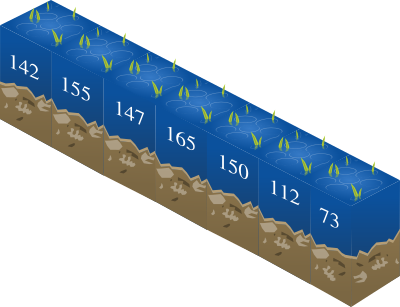
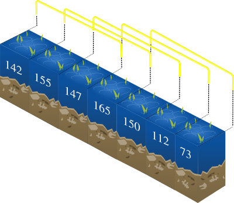
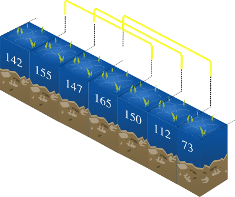

In what concerns the continuous evaluation solving exercises grade during the semester, you should submit until 23:59 of October 18th
(this exercise will still be available for submission after that deadline, but without couting towards your grade)
[to understand the context of this problem, you should read the class #02 exercise sheet]
The estuarin pipefish (Syngnathus watermeyeri) is an endangered river fish species. You are in charge of studying a section of a river where pipefish were found, so that we can better observe its behavior.
The river can be thought of as a sequence of N positions, each one indicating its depth. For instance, a river with N = 7 positions could be the one depicted in the following figure:

The study will take place on a contiguous section of the river that contains exactly K consecutive positions. For instance, if K = 3, there are 5 possible study sections as depicted on the following figure:

Choosing the right section of K positions to study is a delicate task, but you know that pipefish like to swim on positions with a minimum depth of T. Therefore, a study section is considered to be valid if at least half of its positions have a depth bigger or equal than T. For instance, if K = 3 and T = 150, then there would be 3 valid sections:

Can you help compute the number of valid sections for a general case?
Given integers N, K, T and a sequence of N integers, your task is to compute the number of valid sections, that is, the number of contiguous subsequences of length K such that at least half of its elements are bigger or equal than T.
The first line contains three space separated integers: N (the number of positions of the river), K (the length of the study section) and T (the minimum depth).
The second line contains N space separated integers, where the i-th integer represented the depth Ti of the i-th position.
A single line containing an integer that represents the number of contiguous subsequences of length K such that at least half of its elements are bigger or equal than T.
The following limits are guaranteed in all the test cases that will be given to your program:
| 1 ≤ K ≤ N ≤ 100 000 | Length of the river and number of positions in the study section | |
| 1 ≤ T ≤ 100 000 | Minimum depth | |
| 1 ≤ Ti ≤ 100 000 | Depth of each position |
| Example Input 1 | Example Output 1 |
7 3 150 142 155 147 165 150 112 73 |
3 |
| Example Input 2 | Example Output 2 |
12 4 10 5 10 12 10 9 14 5 7 9 11 3 3 |
4 |
The first example of input corresponds to the figures above.